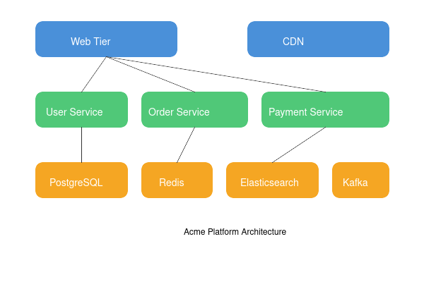

System Architecture
The Acme Platform follows a three-tier microservices architecture deployed on Kubernetes.
Architecture Diagram

Web Tier
The web tier consists of the following components:
- API Gateway - Kong-based gateway handling authentication, rate limiting, and routing
- Web Frontend - React-based SPA served via Nginx
- CDN - CloudFront distribution for static assets
Application Tier
The application tier contains our core microservices:
- User Service - Handles authentication, user profiles, and preferences
- Catalog Service - Product catalog management with Elasticsearch backend
- Order Service - Order processing and fulfillment workflow
- Payment Service - Payment processing with Stripe and PayPal integration
- Inventory Service - Real-time inventory tracking across warehouses
- Recommendation Service - ML-based product recommendations using TensorFlow
Data Tier
The data tier includes:
- PostgreSQL - Primary relational database for transactional data
- Redis - Caching layer and session storage
- Elasticsearch - Product search and analytics
- Kafka - Event streaming between services
- S3 - Object storage for product images and documents
Service Communication
Services communicate using:
- Synchronous REST APIs for request/response patterns
- Kafka events for asynchronous, event-driven workflows
- gRPC for high-performance internal service calls
Security
Security measures include:
- OAuth 2.0 / OIDC for authentication via Keycloak
- mTLS between all services using Istio service mesh
- Secrets management via HashiCorp Vault
- WAF protection at the edge